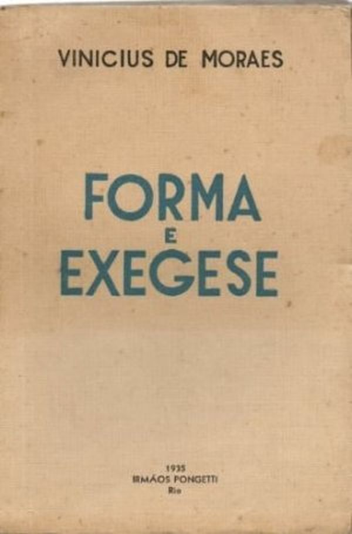
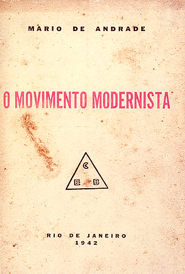

Os Retirantes

Retirantes é uma pintura de Candido Portinari, pintada na cidade de Petrópolis no ano de 1944. Esta obra faz parte do acervo do Museu de Arte de São Paulo.
É uma representação das trajetórias de milhares de famílias nordestinas migrantes, que buscavam melhores condições de vida na região sudeste, sobretudo no Estado de São Paulo
Forma e Exegese
Forma e Exegese foi um claro passo adiante do jovem poeta em relação ao seu primeiro livro e conseguiu ganhar destaque no meio literário do período. Mesmo sem ainda ter na ocasião a amizade que construiria ao longo da vida, ele recebe publicamente críticas positivas de um então já maduro Manuel Bandeira. Com o livro, Vinícius ganha o prestigioso prêmio Filipe d’Oliveira.
O Movimento Modernista
Em fevereiro de 1942, para comemorar o 20º aniversário da Semana da Arte Moderna, Mário de Andrade publicou, em “O Estado de S. Paulo”, quatro artigos em que realiza um balanço do movimento.
O texto é uma verdadeira expressão antológica do movimento modernista e surpreende pelo grau de maturidade do autor para analisá-lo em perspectiva.
A Rosa do Povo

A Rosa do Povo é um livro de poesias brasileiro, escrito pelo modernista Carlos Drummond de Andrade entre 1943 e 1945. É a mais extensa obra do autor sendo composta por 55 poemas, também sendo a primeira obra madura e a de maior expressão do lirismo social e modernista.